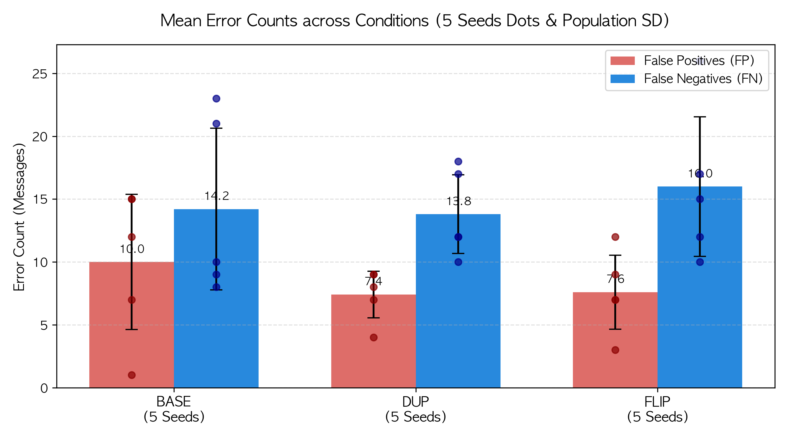
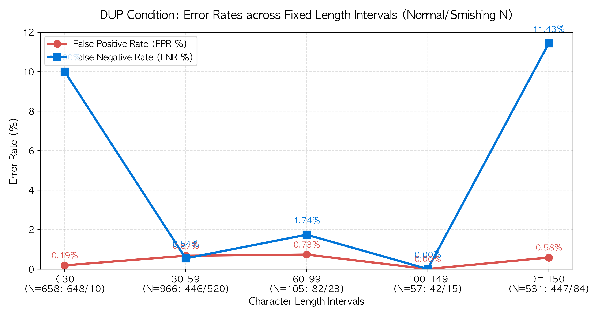
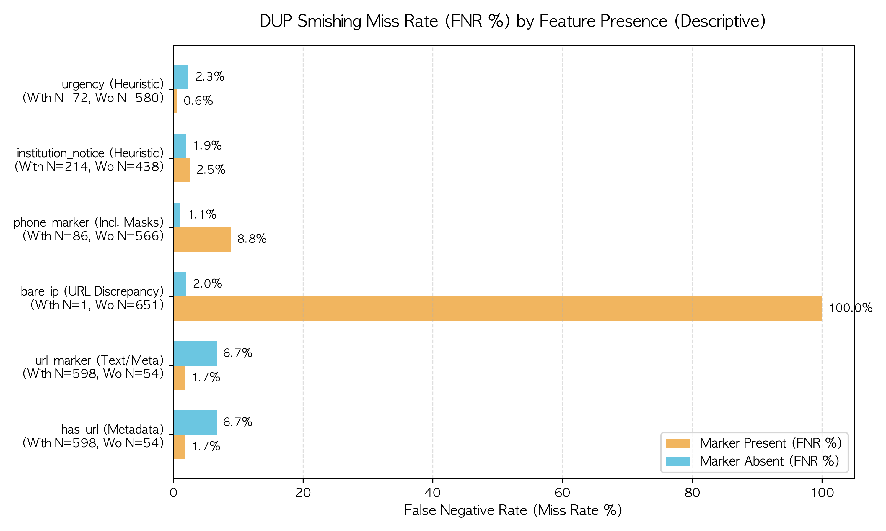
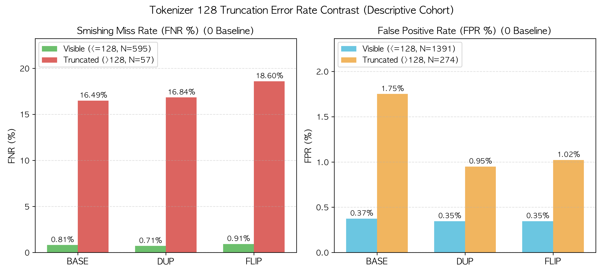
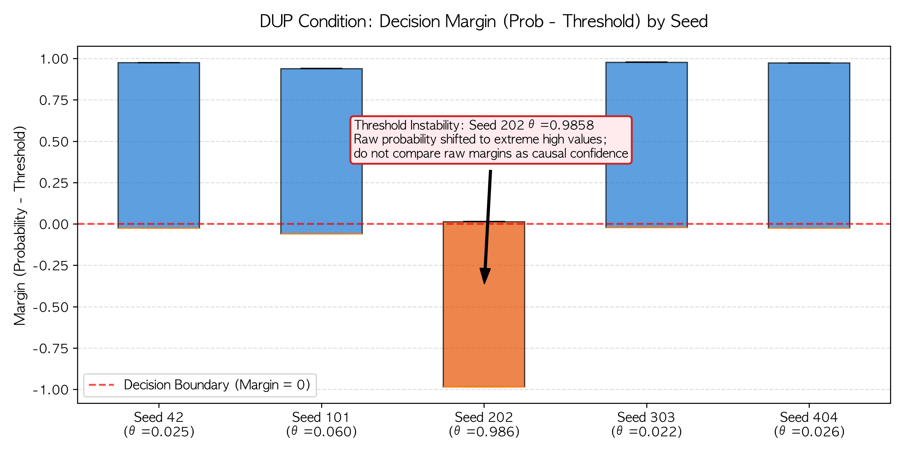
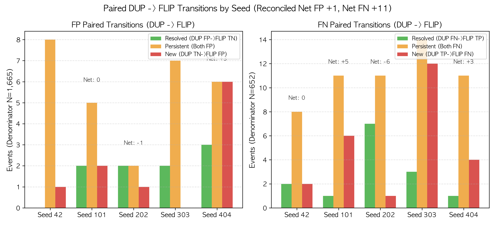

기존 U5 시험셋(N=2,317) 전수 15개 모델(BASE, DUP, FLIP x 5 Seeds)의 정밀 오탐(FP)·미탐(FN) 오류 조건 분석 및 SAS 9.4/Viya 패키지 안내서
본 진단은 기존에 평가한 KcBERT U5 시험셋(2,317건)을 바탕으로, 15개 모델의 혼동행렬을 정합 검증하고 텍스트 구조 및 토큰화 한계에 따른 오차 분포를 분석한 정밀 기술 감사 보고서입니다.
전체 2,317건 중 14.29%(331건: 정상 274건, 스미싱 57건)가 MAXLEN=128 한계로 절단되었습니다. DUP 조건의 5개 시드 이벤트 합계 기준, 128 토큰 내 가시 스미싱의 재현율은 99.29%(2,954/2,975)인 반면, 절단된 스미싱의 재현율은 83.16%(237/285)로 현저히 낮게 관찰되었습니다 (미탐률 FNR: 0.71% vs 16.84%). 단, 이는 코호트 간 텍스트 길이, 레이블 불균형, 주제 차이 등 교란 요인이 공존하므로 '절단이 원인'이라고 단정할 수 없으며 상관적 관찰로 다루어야 합니다.
단일 스미싱 샘플 중 has_url = 0(URL 미포함)으로 분류되었으나 본문에 점 표기 IPv4 주소가 포함된 사례가 확인되었습니다.
이 메시지는 DUP 조건의 5개 시드 모두에서 100% 미탐(FN)되었으며, 15개 모델 전수에서도 미탐(15-Model All Miss)되었습니다.
URL 메타데이터의 포착 범위 문제입니다. U5 모델은 has_url을 입력으로 쓰지 않으므로, 이 표식 누락이 미탐의 원인이라는 뜻은 아닙니다.
DUP 조건의 검증셋 선택 임계값은 타 시드가 0.022 ~ 0.060 수준인 반면, Seed 202는 0.985776으로 극단적으로 치솟았습니다.
이는 모델의 최종 로짓 분포가 시드별 초기화에 따라 크게 이동함을 나타내며, 시드 간 원시 확률 마진(Prob - Threshold)을 보정된 확신도나 인과적 증거로 직접 비교해서는 안 됩니다.
※ 본 차트는 Python matplotlib 기반 미리보기 산출물이며, SAS 9.4/Viya 환경 실행은 대기 중(Pending)입니다.






※ 연구 윤리 및 보안 지침에 따라 실제 메시지 원문은 비공개 격리(`[비공개 격리 경로]`, 0o600) 보관됩니다. 아래 카드는 실제 관찰된 오류 테마를 설명하기 위한 순수 예시용 가상 합성 텍스트이며, 모델에 입력되거나 채점된 결과가 아닙니다.
[배송알림] 고객님의 물품이 경비실에 보관되었습니다. 확인: delivery.example.invalid/track
가설적 설명 (Hypothesis): 가설(Hypothesis): 단문 구조 내 배송/보관 어휘와 링크가 함께 등장할 때 모델이 위험 패턴으로 분류할 가능성이 관찰됨. 실제 어텐션 가중치나 인과는 측정되지 않았으며 모델 간 로짓 보정 상태에 따른 차이일 수 있음.
방어적 고려사항: 출처가 확인된 정상 배송 자료를 별도 개발 자료에 보강하고 신규 평가 자료로 검증. 발신자·문구만으로 자동 허용하지 않음.
[고지] 정보통신망법에 따른 연간 개인정보 이용내역 안내. 세부사항: privacy.example.invalid/notice
가설적 설명 (Hypothesis): 가설(Hypothesis): 연례 법정 고지 문구와 URL 조합이 기관 사칭형 스미싱 데이터와 어휘적으로 중복되어 오탐이 발생할 수 있음.
방어적 고려사항: 정기 법정 고지 양식의 사전 식별 및 기업 공인 알림 서비스 연동.
[건강검진] 검진 결과 통지서 확인: 192.0.2.1/check
가설적 설명 (Hypothesis): 가설(Hypothesis): URL 파서가 도메인 접두사(http:// 등)가 없는 점 표기 IP를 감지하지 못해 has_url=0으로 플래그된 경우, 링크 탐지 특성에 의존하는 모델에서 미탐이 발생할 수 있음.
방어적 고려사항: 새 개발 자료에서 IP 표기 추출 규칙의 적용 범위와 오탐을 검증. 기존 U5 입력·라벨·임계값은 수정하지 않음.
[공지] 정부지원 저금리 대출 상품 상세 안내입니다. [공지] 정부지원 저금리 대출 상품 상세 안내입니다. [공지] 정부지원 저금리 대출 상품 상세 안내입니다. [공지] 정부지원 저금리 대출 상품 상세 안내입니다. [공지] 정부지원 저금리 대출 상품 상세 안내입니다. 신청링크: assist.example.invalid/apply
가설적 설명 (Hypothesis): 가설(Hypothesis): KcBERT의 최대 시퀀스 길이인 128 토큰을 초과하는 텍스트에서 악성 링크가 후미에 위치할 경우 토크나이저에 의해 절단되어 모델 가시 창 밖에 머물러 미탐이 발생할 수 있음 (코호트 교란 요인 고려 필요).
방어적 고려사항: 특수 토큰 예산을 고려한 앞·뒤 구간 결합 또는 링크/연락처 보존을 개발셋에서 비교.
reports/generated/matched_kcbert_u5_unused_test_20260918_v1.json 과 전수 1:1 대조 검증 완료.
| Arm | Seed | Threshold (θ) | TP | TN | FP | FN | Recall | FPR | F1 | Brier |
|---|---|---|---|---|---|---|---|---|---|---|
| BASE | 42 | 0.0329 | 629 | 1650 | 15 | 23 | 96.47% | 0.90% | 97.07% | 0.0142 |
| BASE | 101 | 0.0439 | 644 | 1653 | 12 | 8 | 98.77% | 0.72% | 98.47% | 0.0073 |
| BASE | 202 | 0.3418 | 631 | 1664 | 1 | 21 | 96.78% | 0.06% | 98.29% | 0.0088 |
| BASE | 303 | 0.8012 | 642 | 1658 | 7 | 10 | 98.47% | 0.42% | 98.69% | 0.0063 |
| BASE | 404 | 0.0206 | 643 | 1650 | 15 | 9 | 98.62% | 0.90% | 98.17% | 0.0089 |
| DUP | 42 | 0.0251 | 642 | 1657 | 8 | 10 | 98.47% | 0.48% | 98.62% | 0.0110 |
| DUP | 101 | 0.0605 | 640 | 1658 | 7 | 12 | 98.16% | 0.42% | 98.54% | 0.0079 |
| DUP | 202 임계값 이상치 | 0.9858 | 634 | 1661 | 4 | 18 | 97.24% | 0.24% | 98.29% | 0.0068 |
| DUP | 303 | 0.0221 | 635 | 1656 | 9 | 17 | 97.39% | 0.54% | 97.99% | 0.0106 |
| DUP | 404 | 0.0261 | 640 | 1656 | 9 | 12 | 98.16% | 0.54% | 98.39% | 0.0086 |
| FLIP | 42 | 0.2482 | 642 | 1656 | 9 | 10 | 98.47% | 0.54% | 98.54% | 0.0069 |
| FLIP | 101 | 0.0406 | 635 | 1658 | 7 | 17 | 97.39% | 0.42% | 98.15% | 0.0146 |
| FLIP | 202 | 0.3012 | 640 | 1662 | 3 | 12 | 98.16% | 0.18% | 98.84% | 0.0071 |
| FLIP | 303 | 0.0574 | 626 | 1658 | 7 | 26 | 96.01% | 0.42% | 97.43% | 0.0149 |
| FLIP | 404 | 0.0403 | 637 | 1653 | 12 | 15 | 97.70% | 0.72% | 97.92% | 0.0147 |
순 전이 이벤트: FP 순증가 +1 (DUP 37 -> FLIP 38), FN 순증가 +11 (DUP 69 -> FLIP 80)
| Seed | Type | Denominator | DUP Count | FLIP Count | Net Change | Resolved | New | Persistent | Neither |
|---|---|---|---|---|---|---|---|---|---|
| 42 | FP | 1665 | 8 | 9 | +1 | 0 | 1 | 8 | 1656 |
| 42 | FN | 652 | 10 | 10 | 0 | 2 | 2 | 8 | 640 |
| 101 | FP | 1665 | 7 | 7 | 0 | 2 | 2 | 5 | 1656 |
| 101 | FN | 652 | 12 | 17 | +5 | 1 | 6 | 11 | 634 |
| 202 | FP | 1665 | 4 | 3 | -1 | 2 | 1 | 2 | 1660 |
| 202 | FN | 652 | 18 | 12 | -6 | 7 | 1 | 11 | 633 |
| 303 | FP | 1665 | 9 | 7 | -2 | 2 | 0 | 7 | 1656 |
| 303 | FN | 652 | 17 | 26 | +9 | 3 | 12 | 14 | 623 |
| 404 | FP | 1665 | 9 | 12 | +3 | 3 | 6 | 6 | 1650 |
| 404 | FN | 652 | 12 | 15 | +3 | 1 | 4 | 11 | 636 |
엔터프라이즈 통계 환경 재현을 위해 Mac 의존성 및 하드코딩된 경로를 일체 배제하고,
INFILE ... DSD DLM=',' FIRSTOBS=2, 명시적 스키마, PROC MEANS VARDEF=N,
관측치 가드 검증을 포함한 독립형 SAS 프로그램(sas/16_u5_error_diagnostics.sas)과 6종 CSV를 패키징하였습니다.
※ 개발 환경(macOS) 특성상 로컬 SAS 라이선스가 없어 코드 준비 및 정적 검토(Prepared & Statically Reviewed)를 거쳤으며, SAS 서버 환경에서 즉시 실행 가능합니다.